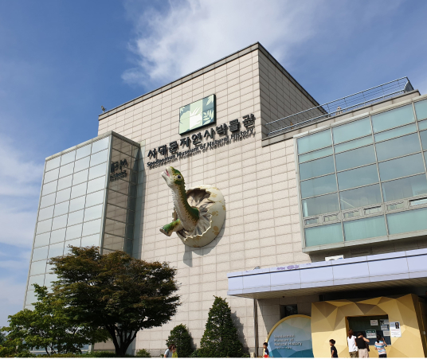

home > 박물관소개 > 박물관소개
박물관 소개
SEODAMUN MUSEUM OF NATURAL HISTORY
-

- 우리나라 최초로 학교나 개인이 아닌
지방 자치 단체에서 직접 계획하고 만든 자연사박물관입니다. - 자연사박물관은 지역 환경의 지질학적, 생물학적 사실에 대한 증거와 기록을 보존·연구하며 대중에게 전시하는 장소입니다. 또한 인간은 자연의 일부라는 사실을 알려주고, 자연환경과 함께 어떻게 살아가야 할지를 알려주는 곳입니다.우리나라는 선진국과 달리 공공기관이 설립·운영하는 자연사박물관이 없는 상태였습니다. 이런 현실에서 서대문자연사박물관은 국내 최초로 공공기관이 설립한 시설로 인정받고 있습니다.
- 우리나라 최초로 학교나 개인이 아닌
-

- 다음과 같은 특징을 가지고 있습니다.
- 자연사에 대해 쉽게 이해하고 오래 기억에 남도록 전시물이 역사적인 흐름에 맞추어 시간적·공간적 순서에 따라 전시되어 있습니다. 지루하지 않고 재미있게 관람할 수 있도록 전시물이 입체적인 디오라마 형식으로 꾸며져 있습니다. 박물관이 자체 제작한 교육 동영상을 제공하며, 여러 가지 체험 프로그램을 개발하여 운영하고 있습니다.
-

- 살아있는 인성교육의 공간입니다.
- 도시 속에 위치한 자연사박물관은 청소년의 교육 공간, 주민들의 문화 공간, 가족의 휴식 공간입니다.비록 도시에 살지만 자연스럽게 동·식물과 접할 기회를 제공함으로써 우리들에게 생명을 아끼고 사랑하는 마음을 심어줍니다. 가족들에게는 휴식의 장소로 기능합니다. 자연 속에서 평온함을 찾으며, 가족들끼리 함께 시간을 보내며 즐거운 경험을 공유할 수 있습니다. 이렇게 도시 속에 위치한 자연사 박물관은 우리에게 생명을 존중하고 아끼는 마음을 심어주는 소중한 공간입니다.